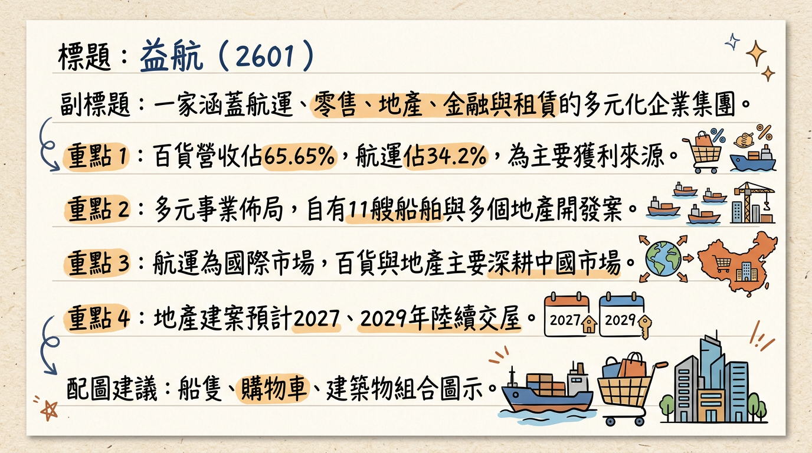
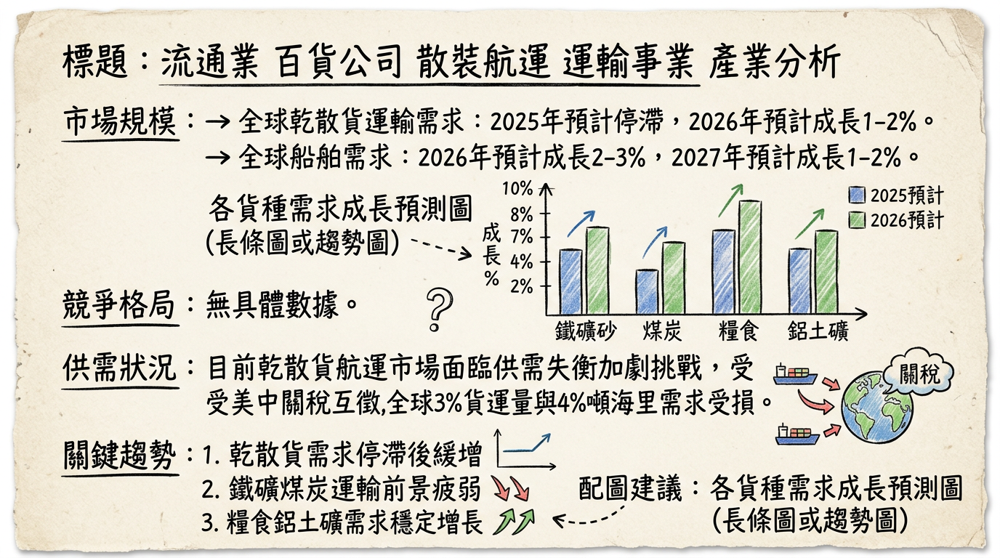
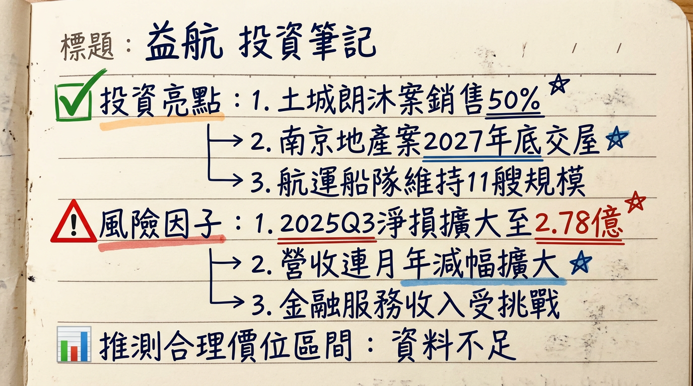

2601 益航 深度研究報告
一句話摘要
益航為多元化經營集團，核心業務涵蓋航運、百貨、地產開發及金融服務。公司近期受會計認列方式改變影響，營收大幅波動；本業獲利能力持續疲弱，累計至2025年第三季仍處虧損。短期股價受散裝航運題材及主力資金帶動，呈現急漲急跌的投機性質；長期成長動能仰賴地產開發案（土城「朗沐」案預計2029年交屋、南京健康路案預計2027年交屋）的銷售與入帳，目前基本面仍面臨挑戰。
公司概覽
益航股份有限公司（2601）是一家業務多元化的企業集團，主要營運項目包括國際乾散貨運、中國百貨零售、台灣及中國地產開發、香港金融服務以及中國融資租賃等。公司不設傳統意義上的製造基地，營運據點遍及全球及大中華區。
營收結構（截至2025年前三季）
| 事業體 | 營收佔比 |
|---|
| 百貨 | 65.65% |
| 航運 | 34.20% |
| 建設 | 0.40% |
| 租賃 | 0.20% |
| 投資 | 0.20% |
營收區域分佈（截至2024年）
| 地區 | 金額 (億元新台幣) | 佔比 |
|---|
| 中國 | 32.59 | 67.20% |
| 其他國家 | 15.84 | 32.66% |
| 台灣 | 0.007 | 0.14% |
核心競爭優勢
- 多角化經營分散風險： 橫跨航運、百貨、地產開發、金融與租賃，可降低單一產業景氣波動對整體營運的衝擊。
- 航運資產穩健： 擁有11艘自有乾散貨船舶，透過長短租約與聯營池(POOL)策略，力求穩定運營並分散市場風險。
- 地產開發潛力： 在台灣及中國持有具潛力的土地開發項目，如土城「朗沐」案（銷售率50%）及南京健康路案，預計未來幾年可望帶來營收與獲利貢獻。
- 大中華區市場佈局： 百貨零售與融資租賃業務深耕中國市場，金融服務業務立足香港，具備區域市場經驗。
財務分析
月營收趨勢
| 月份 | 金額 (千元新台幣) | 月增率 MoM | 年增率 YoY | 備註 |
|---|
| 2026年01月 | 126,046 | -61.36% | -71.12% | 原合併報表子公司改採權益法認列，營收不再納入合併 |
| 2025年12月 | 326,248 | -11.08% | -22.07% | |
| 2025年11月 | 366,941 | -1.48% | -6.46% | |
| 2025年10月 | 372,454 | 16.66% | -14.96% | |
| 2025年09月 | 319,255 | -8.06% | -9.84% | |
| 2025年08月 | 347,250 | 10.57% | -11.17% | |
2026年1月營收大幅下滑，主要原因為原合併報表子公司改採權益法認列，其營收不再納入合併，並非完全反映本業實質營運大幅衰退。
季度數據
| 季度 | EPS (元) | 毛利率 | 營業利益率 |
|---|
| 2025年Q3 | -0.09 | 60.09% | -6.76% |
| 2025年Q4 | 尚未公布 | 尚未公布 | 尚未公布 |
全年度營收與 EPS
| 年度 | 全年度營收 (千元新台幣) | 全年度EPS (元) |
|---|
| 2024年 (實際) | 4,849,318 | -0.35 |
| 2025年 (預估/累計) | 4,212,483 (截至Q3) | -0.34 (截至Q3累計) |
法說會重點 (2025年12月12日)
益航於法說會中說明2025年前三季營運概況，主要內容如下：
- 財務概況： 合併營收為新台幣31.47億元，歸屬母公司業主稅後淨損為新台幣2.78億元，每股稅後盈餘（EPS）為-0.34元，虧損幅度較去年同期擴大。
- 航運事業： 船隊維持11艘規模（2艘輕便型、5艘卡姆薩型、4艘超輕便極限型），採長短租約搭配聯營池策略以穩定收入及分散風險。
- 地產開發：
* 土城「朗沐」案銷售率已達
50%，預計於
2029年第二季交屋。
* 南京健康路案已取得建照並進行地下室工程，預計於2027年底交屋。
- 金融服務： 子公司大禹金融面臨香港資本市場挑戰，財務顧問服務收入略為衰退。
- 管理層未提供： 本次法說會未提供具體的出貨量/訂單能見度說明、產能利用率、資本支出金額，以及對下季/下半年的財務指引。
券商觀點
目前尚未找到2024年以後任何券商對益航（2601）的具體目標價報告或2025-2026年EPS預估數字。
券商目標價
財報深度分析
利潤率趨勢 (季)
| 季度 | 毛利率 | 營業利益率 | 稅後淨利率 |
|---|
| 2024年Q1 | 65.03% | 5.69% | -9.14% |
| 2024年Q2 | 64.24% | 1.77% | -2.24% |
| 2024年Q3 | 63.70% | -7.59% | -11.14% |
| 2024年Q4 | 61.93% | -1.43% | -19.93% |
| 2025年Q1 | 62.47% | -2.19% | -18.27% |
| 2025年Q2 | 60.09% | -6.84% | -18.61% |
| 2025年Q3 | 60.09% | -6.76% | -20.24% |
益航的毛利率在60%以上，相對穩健。然而，營業利益率自2024年Q3起轉為負值，並持續在負區間波動，顯示本業營運成本控管或市場競爭壓力增加。稅後淨利率持續為負值且有擴大趨勢，尤其2024年Q4及2025年Q3分別為-19.93%及-20.24%，顯示業外損失或龐大的營業費用嚴重侵蝕獲利。
存貨與營運週轉天數趨勢 (季)
| 季度 | 存貨週轉天數 (天) | 應收帳款週轉天數 (天) | 營運週轉天數 (天) |
|---|
| 2024年Q1 | 389.59 | 22.74 | 412.33 |
| 2024年Q2 | 410.87 | 21.43 | 432.30 |
| 2024年Q3 | 437.00 | 20.96 | 457.96 |
| 2024年Q4 | 378.50 | 17.83 | 396.33 |
| 2025年Q1 | 416.17 | 16.29 | 432.46 |
| 2025年Q2 | 437.85 | 14.60 | 452.45 |
| 2025年Q3 | 443.03 | 14.97 | 458.00 |
- 存貨週轉天數： 在2024年至2025年Q3呈現波動上升趨勢，2025年Q3達到443.03天，顯示公司消化存貨的時間拉長，可能暗示銷售不如預期或庫存管理效率下降。
- 應收帳款週轉天數： 呈現下降趨勢，2025年Q3為14.97天，這通常代表收款效率有所提升。
- 營運週轉天數： 2025年Q3達458天 (約15.2個月)，遠高於正常合理範圍，資金被長期積壓在存貨與應收帳款中，顯示營運效率低下，可能帶來資金週轉風險。
資本支出與產能
目前未找到2025-2026年關於益航具體資本支出金額、未來資本支出計畫、預計新增產能及折舊攤銷趨勢的最新公開資料。
其他財報重點
* 2024年Q1-Q4負債對淨值比率維持在
210%以上 (2024Q1: 217.4%, Q2: 212.5%, Q3: 216.6%, Q4: 214.3%)，顯示負債水準偏高，可能增加利息負擔和財務風險。
* 2025年Q3個別報表負債總額佔資產總額為67.4%。
- 自由現金流量： 2024年每股自由現金流量累計為1.38元，呈現正值並逐步增加，顯示公司在營運活動中仍能產生正向現金流。
- 業外收支： 業外收支佔營收比率多為負值且波動大 (2025年Q3為-14.08%)，顯示業外損益對公司整體獲利持續產生負面影響。
股權異動
- 董監事/大股東申報轉讓紀錄： 未找到2024-2026年最新紀錄。
- 庫藏股買回紀錄： 未找到2024-2026年最新紀錄。
- 可轉換公司債（CB）： 未找到2024-2026年是否有發行可轉換公司債的最新資訊。
- 現金增資或減資計畫： 未找到2024-2026年最新計畫。
- 股利政策： 董事會於2025年03月28日決議，不發放2024年度股利（現金股利0元/股，股票股利0元/股）。
產業分析
一、乾散貨航運事業
- 全球市場規模與成長率： 2025年乾散貨運輸需求預計停滯，2026年溫和增長1-2%。2026年船舶需求預計增長2-3%，2027年放緩至1-2%。
- 供需狀況：
*
需求端： 鐵礦石、煤炭運輸展望疲弱，糧食、鋁土礦、南美大豆、印度煉焦煤需求預計穩定或強勁增長。紅海風險導致繞行好望角，虛增約
2%運輸需求。
* 供給端： 船隊預計2025、2026年分別增長約2.8%和2.9%。2026年將有超過600艘乾散貨新船交付，創十餘年新高。船舶拆解量預計從2024年4.7百萬載重噸增至2026年9.7百萬載重噸。
* 總結： 2026年供需關係預計保持平衡，2027年可能減弱。
- 產業平均毛利率水準： 2025年第一季度運價同比下滑36%。海岬型日均獲利於2026年3月3日增加1019美元至25929美元。
二、百貨零售事業 (中國市場)
- 市場規模與成長率： 未找到具體金額。
- 供需狀況： 中國零售市場進入存量競爭，線上滲透觸達天花板，線下份額穩固。消費者追求「與我相關」的產品及情緒需求。
- 產業平均毛利率水準： 中國百貨商業協會數據顯示，2025年前三季度百貨樣本企業毛利率為31.84%。新世界百貨中國商品銷售毛利率從13.4%降至13.2% (截至2026年2月26日)。
三、地產開發事業 (台灣市場)
- 市場規模與成長率： 未找到具體金額。
- 供需狀況： 台灣房市自2024年底轉冷，2025年住宅開工宅數12.7萬宅（年減2%），為近6年新低。2025年住宅使用執照核發量創新高，新北、台中、桃園為交屋重災區。2025年1-11月六都買賣移轉件數年衰退26.1%，創八年新低。預計2026年將確立「技術性空頭」格局。
- 產業平均毛利率水準： 未找到具體金額。
四、金融服務及融資租賃事業 (香港/中國市場)
*
香港金融服務： 截至2024年底，管理資產總值年增
13%至
35萬億港元。預計2026年香港跨境財富管理規模增長
5%至10%。
* 中國融資租賃： 截至2025年末合同餘額約53800億元，2024年末下降3.2%。預計未來六年年均增速將維持在5%左右，2026年市場規模達6.65萬億元。
*
香港金融服務： 國際資本湧入、家族辦公室增加，香港加速追趕瑞士。
* 中國融資租賃： 行業邁向規模轉向價值創造，積極拓展高端裝備製造、新能源等領域。
競爭格局
由於資料中未提供益航各事業體具體的競爭者市場份額、技術、產能、客戶及價格等比較數據，因此無法建立詳細的競爭格局表格。
乾散貨航運事業
- 全球前5大公司及其市佔率： 未找到2025-2026年最新資料。
- 益航 vs 主要競爭對手： 益航自有船舶共11艘，缺乏與主要競爭對手在技術、產能、客戶、價格等方面的具體比較資料。
- 台灣同業比較： 未找到2025-2026年台灣乾散貨航運同業在營收規模、毛利率、EPS方面的最新對比資料。
百貨零售事業 (中國市場)
- 未找到2025-2026年中國百貨零售業的競爭格局、前5大公司及其市佔率，以及益航（透過大洋-KY）與主要競爭對手的具體比較資料。
地產開發事業 (台灣市場)
- 未找到2025-2026年台灣房地產開發業的競爭格局、前5大公司及其市佔率，以及益航（透過薪昇暘開發）與主要競爭對手的具體比較資料。
金融服務及融資租賃事業 (香港/中國市場)
- 未找到2025-2026年香港金融服務/資產管理業及中國融資租賃業的競爭格局、前5大公司及其市佔率，以及益航（透過大禹金融、友成融資租賃）與主要競爭對手的具體比較資料。
產業趨勢
一、乾散貨航運事業
1.
綠色航運與環保法規趨嚴： IMO 2030年碳強度降低
40%目標，歐盟ETS實施，加速高污染老船淘汰，有利於擁有節能船隊的業者。
2. 數位化與自動化： AI路徑優化、遠程遙控技術提升營運效率與碳排放管理。
3. 地緣政治與貿易政策： 紅海風險、中美關稅互徵持續衝擊貨運量和運價。
*
機會： 加速船隊環保升級可獲競爭優勢；電動車產業鏈對鋰、鎳等礦產運輸需求增長。
* 威脅： 乾散貨市場供需失衡、運價承壓；地緣政治不確定性；新船集中交付壓制運價，特別是中型船型。
- 相關投資題材： 電動汽車原材料運輸需求、AI在航運效率優化應用。
二、百貨零售事業 (中國市場)
1.
數位化與智能化： AI賦能下，零售模式從商品售賣轉向提供「與我相關」的情緒與體驗價值。
2. 消費升級與體驗經濟： 消費者追求「值得」的體驗，互動與生活方式複合生態成為趨勢。
3. 精細化管理與業態融合： 存量市場下，特色化、主題化經營與多業態融合是成功關鍵。
*
機會： 大洋百貨若能抓住中國消費者「情緒共鳴」趨勢，進行空間重構、技術賦能，並深耕下沉市場。
* 威脅： 市場競爭激烈、線上分流與業態更迭持續擠壓傳統百貨空間，同質化與坪效下滑是挑戰。
三、地產開發事業 (台灣市場)
1.
ESG與智慧建築： 商辦選址重視ESG、節能與智慧化，高科技廠辦需求上升。
2. 高齡住宅需求： 嬰兒潮世代邁入高齡，高齡住宅市場潛力巨大。
3. 產業鏈重組與科技聚落： AI浪潮與半導體擴張，推動科技聚落（如桃園、新竹、台南）的工業地產需求。
*
機會： 若薪昇暘開發能鎖定高科技廠辦或符合ESG、智慧化趨勢的住宅，或受益於科技聚落效應。
* 威脅： 台灣房市進入修正，面臨「價跌量溫」與「殺價取量」格局；高利率與政府調控政策可能抑制銷售；新供給高峰期可能導致空置率攀升。
- 相關投資題材： AI產業與半導體供應鏈擴張帶來的廠辦需求，建築智能化元素。
四、金融服務及融資租賃事業 (香港/中國市場)
1.
AI與數位化： 香港金管局推動AI基礎設施建設，中國融資租賃業深化數位化技術應用於風險防控與效率提升。
2. 綠色金融與可持續發展： 中國融資租賃行業積極拓展新能源、節能環保等戰略性新興產業。
*
機會： 大禹金融受惠於香港資產管理市場增長和跨境財管中心地位；友成融資租賃可拓展新一代信息技術、高端裝備、新能源等戰略新興產業。
* 威脅： 中國融資租賃業面臨監管收緊與市場洗牌；香港金融服務市場競爭激烈。
- 相關投資題材： AI技術在金融服務的應用；融資租賃配合新能源、電動車產業鏈設備採購。
近期催化劑 (2025年12月 - 2026年03月)
利多事件清單
- 2026年03月05日： 股價勁揚逾9%至7.19元，市場資金偏好具防禦與實體資產概念標的，受惠航運與百貨雙題材，主力與外資先前同步加碼推升。
- 2026年03月04日： 股價亮燈漲停6.57元，受散裝航運運價題材點火，外資買超2,425張，主力買超1,911張，顯示籌碼從散戶流向特定大戶集中。
- 2026年03月03日： 外資淨買超約2,434張 (三大法人合計)。
- 地產開發： 土城「朗沐」案銷售率已達50%，南京健康路案進行地下室工程，為未來潛在營收與獲利貢獻。
利空事件清單
- 2026年03月06日： 股價大跌7.37%至6.66元，市場解讀為散裝航運題材退燒，日K連二黑。
- 2026年02月12日： 公布2026年1月營收1.26億元，月減61.36%，年減71.12%。儘管主要歸因於會計認列方式改變，仍反映合併營收規模大幅縮減。
- 2026年01月13日： 公布2025年12月營收3.26億元，月減11.09%，年減22.08%。
- 2025年12月12日： 公布2025年前三季累計稅後淨損2.78億元，EPS為-0.34元，虧損幅度擴大。
- 2025年03月28日： 董事會決議不發放2024年度股利（0元/股）。
- 營運表現： 子公司大禹金融面臨香港資本市場挑戰，財務顧問服務收入略為衰退。
- 股價波動： 近期股價急漲後可能面臨乖離過大的修正壓力，技術指標過熱，需留意追價風險。
⭐ 成長動能時間軸
| 類別 | 事件描述 | 具體時間/階段 | 預計影響 |
|---|
| 地產開發 | 土城「朗沐」案：銷售率達50% | 2024年Q4開賣，預計2029年Q2交屋 | 預期2029年起認列營收與獲利 |
| 地產開發 | 南京健康路案：取得建照並進行地下室工程 | 已進行，預計2027年底交屋 | 預期2027年底起認列營收與獲利 |
| 地產開發 | 「半島花園」案：第一期保留店面彈性運用；第三期擬處分 | 持續評估中 | 資產活化與營運資金挹注 |
| 地產開發 | 土城永福段55、55-1地號合建案及烏石港案 | 辦理變更設計審議程序 | 未來潛在開發項目 |
| 產能/船隊 | 航運事業船隊維持11艘規模 | 持續營運 | 維持現有航運營收基礎 |
| 需求面 | 散裝航運：2026年Q1穀物運輸需求熱絡，中小型散裝船受惠 | 2026年Q1 | 短期運價支撐，有利中小型船隊 |
| 需求面 | 散裝航運：地緣政治風險趨緩後重建與運輸需求想像 | 2026年起潛在 | 長期需求回升想像空間 |
2026 展望
成長動能
- 地產開發貢獻： 台灣土城「朗沐」案與中國南京健康路案將陸續進入交屋階段，預計從2027年底及2029年第二季開始貢獻 substantial 營收及獲利，為益航提供明確的長期成長動能。
- 散裝航運市場短期利多： 全球散裝航運市場因穀物運輸需求熱絡、中小型散裝船運價持穩，以及地緣政治風險降溫後的重建需求想像，可能帶來短期的營運支撐與資金題材。
- 多元化業務彈性： 透過資產管理、融資租賃等業務在特定新興產業（如新能源）的深耕，有望在中國市場尋求新的增長點。
風險
- 本業獲利持續疲弱： 2025年前三季持續虧損，2026年1月營收雖因會計調整，但反映合併報表規模縮減，顯示公司核心業務動能仍不足以支撐獲利。
- 散裝航運市場不確定性： 儘管短期有題材，但長期仍面臨新船交付量創高、供需失衡加劇的結構性壓力，運價波動劇烈，營收難以穩定。紅海危機的虛增需求一旦消失，將對運價造成衝擊。
- 中國百貨零售挑戰： 中國消費力道未見明顯復甦，傳統百貨業持續受線上分流與業態競爭擠壓，大洋百貨的轉型壓力仍在。
- 台灣房市下行風險： 台灣房市進入修正階段，呈現「價跌量溫」和「殺價取量」格局，高利率環境與政府政策可能影響地產開發案的銷售進度與獲利空間。
- 財務結構壓力： 高負債比率、營運週轉天數過長，可能造成資金壓力與利息負擔，尤其在公司虧損擴大時更顯脆弱。
- 缺乏具體財務預測與券商追蹤： 市場對益航未來營運缺乏透明度與專業預測，增加投資不確定性。
投資結論
益航（2601）作為一個多角化經營的集團，其投資價值目前高度分化。
短期股價波動，基本面仍疲弱： 近期股價受散裝航運題材及籌碼面推升，但公司至2025年Q3仍虧損，營業利益率與稅後淨利率為負，本業動能欠佳。2026年1月營收雖因會計認列調整而大幅下滑，但剔除此因素後，仍需關注核心事業的實質營運改善狀況。投資人應謹慎看待其短期股價表現，避免盲目追高。
地產開發為長期成長主軸，但貢獻遙遠： 土城「朗沐」案（預計2029年Q2交屋）與南京健康路案（預計2027年底交屋）是益航未來數年明確的營收與獲利貢獻來源。然而，這些貢獻時程尚遠，在目前房市修正與公司本業虧損的背景下，投資價值需耐心等待。
航運事業波動大，非穩定獲利來源： 散裝航運受地緣政治、全球貿易景氣與新船供給影響劇烈。雖然短期市場可能因特定事件而有炒作空間，但長期供需失衡壓力猶存。益航的11艘船隊規模相對有限，難以在全球市場中扮演主導角色。
財務體質待改善： 益航負債對淨值比率超過200%（2024年），且存貨週轉天數上升至443天，營運週轉天數長達458天，顯示資金運用效率不彰，財務風險相對偏高，且2024年度未發放股利。
綜合考量，益航在短期內缺乏穩健的獲利基礎，股價易受題材和籌碼面影響，波動性大。長期而言，地產開發潛力值得關注，但兌現時間點較晚。基於其當前疲弱的基本面和高波動性，建議投資人：
投資建議： 觀望，或區間操作。
目標價區間建議： 由於缺乏明確的基本面支撐與券商分析，且公司盈餘為負值，給予具體目標價存在高度不確定性。建議投資人對益航採取
區間操作策略，
短期觀察散裝航運熱度與資金流向，上方壓力區間預計在
新台幣 7.0 - 7.5 元；下方支撐區間建議參考
新台幣 5.8 - 6.2 元。由於公司基本面仍疲弱且財報透明度有待提升，不建議作為長期核心持股，應嚴格執行停損停利紀律。
本報告由 AI 自動產生，資料來源為公開網路資訊，僅供參考，不構成投資建議。產生時間：2026-03-06 13:37
📊 資訊卡


